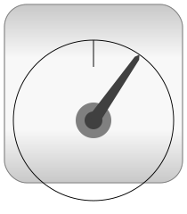

This package contains electric machine models and components for
modeling these machines.
Limitations and assumptions:
- number of phases (of induction machines) is limited to 3,
therefore definition as a constant m=3
- phase symmetric windings as well as symmetry of the whole
machine structure
- all values are used in physical units, no scaling to p.u. is
done
- only basic harmonics (in space) are taken into account
- waveform (with respect to time) of voltages and currents is not
restricted
- constant parameters, i.e., no saturation, no skin effect
You may have a look at a short summary of space phasor theory at
http://www.haumer.at/refimg/SpacePhasors.pdf
Further development:
- generalizing space phasor theory to m phases with arbitrary
spatial angle of the coils
- generalizing space phasor theory to arbitrary number of
windings and winding factor of the coils
- MachineModels: other machine types
- effects: saturation, skin-effect, ...
In memoriam Prof. Hans Kleinrath (1928-03-07 -
2010-04-05)
- Main Authors:
-
Anton Haumer
Technical Consulting & Electrical Engineering
A-3423 St.Andrae-Woerdern
Austria
email: a.haumer@haumer.at
Dr.Christian Kral
A-1060 Vienna, Austria
Copyright © 1998-2013, Modelica Association, Anton Haumer and
AIT.
This Modelica package is free software and the use is
completely at your own risk; it can be redistributed and/or
modified under the terms of the Modelica License 2. For license
conditions (including the disclaimer of warranty) see Modelica.UsersGuide.ModelicaLicense2
or visit https://www.modelica.org/licenses/ModelicaLicense2.
Contents
| Name |
Description |
 Examples Examples |
Test examples |
| BasicMachines |
Basic machine models |
|  Sensors |
Sensors for machine modelling |
 SpacePhasors SpacePhasors |
Library with space phasor-models |
| Losses |
Loss models for electric machines |
| Thermal |
Library with models for connecting thermal models |
| Interfaces |
SpacePhasor connector and PartialMachines |
| Icons |
Icons for electrical machines |
 Utilities Utilities |
Library with auxiliary models for testing |
- v1.00 2004/09/16 Anton Haumer
first stable release
- v1.01 2004/09/18 Anton Haumer
moved common equations from machine models to PartialMachine
improved MoveToRotational
- v1.02 2004/09/19 Anton Haumer
new package structure for machine types
added DC machine models
- v1.03 2004/09/24 Anton Haumer
added package Sensors
added DC machine with series excitation
debugged and improved MoveToRotational
- v1.1 2004/10/01 Anton Haumer
changed naming and structure
issued to Modelica Standard Library 2.1
- v1.2 2004/10/27 Anton Haumer
fixed a bug with support (formerly bearing)
- v1.3 2004/11/05 Anton Haumer
several improvements in SpacePhasors.Blocks
- v1.3.1 2004/11/06 Anton Haumer
small changes in Examples.Utilities.VfController
- v1.3.2 2004/11/10 Anton Haumer
ReluctanceRotor moved to SynchronousMachines
- v1.4 2004/11/11 Anton Haumer
removed mechanical flange support
to ease the implementation of a 3D-frame in a future release
- v1.51 2005/02/01 Anton Haumer
changed parameter polePairs to Integer
- v1.52 2005/10/12 Anton Haumer
added
BasicMachines.SynchronousInductionMachines.SM_ElectricalExcited
using new basicMachines.Components.ElectricalExcitation
as well as a new exmaple.
- v1.53 2005/10/14 Anton Haumer
introduced unsymmetrical DamperCage for Synchronous Machines
- v1.60 2005/11/04 Anton Haumer
added SpacePhasors.Components.Rotator
corrected consistent naming of parameters and variables
- v1.6.1 2005/11/22 Anton Haumer
improved Transformation and Rotation in SpacePhasor.
introduced Examples.Utilities.TerminalBox
- v1.6.2 2005/10/23 Anton Haumer
selectable DamperCage for Synchronous Machines
- v1.6.3 2005/11/25 Anton Haumer
easier parameterization of
AsynchronousInductionMachines.AIM_SlipRing model
- v1.7.0 2005/12/15 Anton Haumer
back-changed the naming to ensure backward compatibility
- v1.7.1 2006/02/06 Anton Haumer
changed some naming of synchronous machines, not affecting existing
models
- v1.8.0 2006/11/26 Anton Haumer
introduced package Transformers
moved common parameters and functionality to partial models,
keeping Interfaces.PartialBasicInductionMachines resp.
PartialBasicDCMachine for compatibility reasons.
implemented support showing reaction torque if connected
- v1.8.1 2006/12/01 Anton Haumer
resolved a compatibility issue with airGap
- v1.8.2 2007/01/15 Anton Haumer
resolved a bug in electrical excited synchronous induction
machine
- v1.8.3 2007/06/08 Anton Haumer
documentation update
- v1.8.4 2007/06/25 Anton Haumer
corrected some typos in documentation
- v1.8.5 2007/06/26 Anton Haumer
consistent parameters of DCSE
- v1.8.6 2007/08/12 Anton Haumer
improved documentation
- v1.8.7 2007/08/20 Anton Haumer
corrected typo in documentation
- v1.8.8 2007/08/20 Anton Haumer
improved documentation
- v1.9.0 2007/08/24 Anton Haumer
removed redeclare type SignalType
- v1.9.1 2007/10/15 Anton Haumer
solved a bug with replaceable airgap / partial machines
- v1.9.2 2007/10/15 Anton Haumer
changed some names to be more concise (see conversion script)
- v2.0.0 2007/11/13 Anton Haumer
removed replaceable from airgaps
removed cardinality from support, using a Boolean parameter
removed all nonSIunits
- v2.1.0 2009/08/26 Anton Haumer
set all useHeatPort=false
- v2.1.1 2010/02/05 Anton Haumer
included Utilities.rheostats (designed by Christian Kral)
- v2.1.2 2010/02/09 Anton Haumer
included new Examples (AIMC_Transformer, DC_Comparison)
- v2.1.3 2010/02/10 Anton Haumer
prepared conditionalHeatPort of SquirrelCage and DamperCage
- v2.2.0 2010/02/10 Anton Haumer
conditional ThermalPort for all machines
- v2.3.0 2010/02/16 Anton Haumer
quasistationary DC machine models
- v2.4.0 2010/04/20 Anton Haumer
loss models
- v2.5.0 2012/xx/xx Anton Haumer
permanent magnet losses
- v2.6.0 2013/02/25 Anton Haumer
corrected turnsRatio bug in asynchronous induction machine with
slipring; corrected parameter descriptions
- v3.2.1 2013/07/30 Anton Haumer, Christian Kral
corrected bug in wrong orientation of rotor current, see #1226
Generated at 2014-02-11T19:03:12Z by OpenModelica1.9.1+dev (r19045) (RML
version)